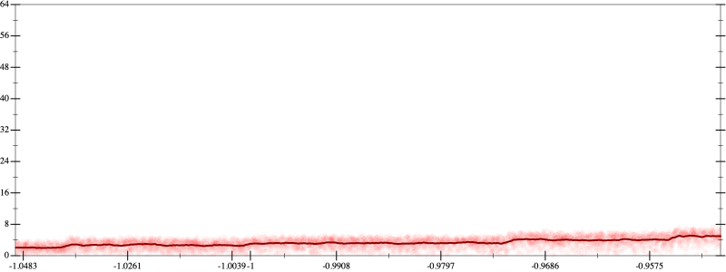
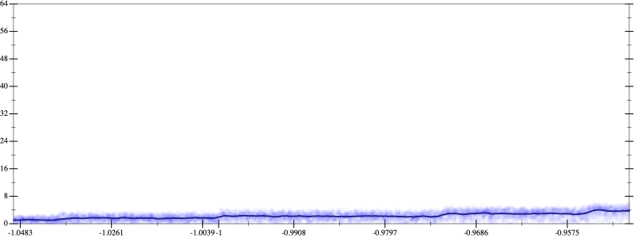
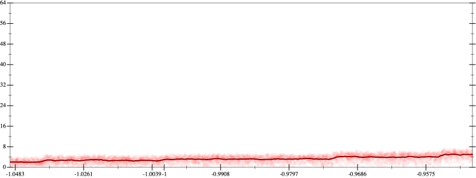
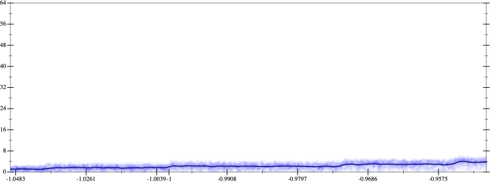

Initial program 3.3
\[\left(\left(-0.3125 + 6.5625 \cdot \left(x \cdot x\right)\right) + -19.6875 \cdot \left(\left(\left(x \cdot x\right) \cdot x\right) \cdot x\right)\right) + 14.4375 \cdot \left(\left(\left(\left(\left(x \cdot x\right) \cdot x\right) \cdot x\right) \cdot x\right) \cdot x\right)\]
Applied simplify2.4
\[\leadsto \color{blue}{\left(\left(x \cdot 6.5625\right) \cdot x + -0.3125\right) + \left(\left(x \cdot x\right) \cdot \left(x \cdot x\right)\right) \cdot \left(-19.6875 + \left(x \cdot x\right) \cdot 14.4375\right)}\]
- Using strategy
rm Applied add-cube-cbrt2.4
\[\leadsto \color{blue}{\left(\sqrt[3]{\left(\left(x \cdot 6.5625\right) \cdot x + -0.3125\right) + \left(\left(x \cdot x\right) \cdot \left(x \cdot x\right)\right) \cdot \left(-19.6875 + \left(x \cdot x\right) \cdot 14.4375\right)} \cdot \sqrt[3]{\left(\left(x \cdot 6.5625\right) \cdot x + -0.3125\right) + \left(\left(x \cdot x\right) \cdot \left(x \cdot x\right)\right) \cdot \left(-19.6875 + \left(x \cdot x\right) \cdot 14.4375\right)}\right) \cdot \sqrt[3]{\left(\left(x \cdot 6.5625\right) \cdot x + -0.3125\right) + \left(\left(x \cdot x\right) \cdot \left(x \cdot x\right)\right) \cdot \left(-19.6875 + \left(x \cdot x\right) \cdot 14.4375\right)}}\]
- Using strategy
rm Applied *-un-lft-identity2.4
\[\leadsto \left(\sqrt[3]{\left(\left(x \cdot 6.5625\right) \cdot x + -0.3125\right) + \left(\left(x \cdot x\right) \cdot \left(x \cdot x\right)\right) \cdot \left(-19.6875 + \left(x \cdot x\right) \cdot 14.4375\right)} \cdot \color{blue}{\left(1 \cdot \sqrt[3]{\left(\left(x \cdot 6.5625\right) \cdot x + -0.3125\right) + \left(\left(x \cdot x\right) \cdot \left(x \cdot x\right)\right) \cdot \left(-19.6875 + \left(x \cdot x\right) \cdot 14.4375\right)}\right)}\right) \cdot \sqrt[3]{\left(\left(x \cdot 6.5625\right) \cdot x + -0.3125\right) + \left(\left(x \cdot x\right) \cdot \left(x \cdot x\right)\right) \cdot \left(-19.6875 + \left(x \cdot x\right) \cdot 14.4375\right)}\]
Applied associate-*r*2.4
\[\leadsto \color{blue}{\left(\left(\sqrt[3]{\left(\left(x \cdot 6.5625\right) \cdot x + -0.3125\right) + \left(\left(x \cdot x\right) \cdot \left(x \cdot x\right)\right) \cdot \left(-19.6875 + \left(x \cdot x\right) \cdot 14.4375\right)} \cdot 1\right) \cdot \sqrt[3]{\left(\left(x \cdot 6.5625\right) \cdot x + -0.3125\right) + \left(\left(x \cdot x\right) \cdot \left(x \cdot x\right)\right) \cdot \left(-19.6875 + \left(x \cdot x\right) \cdot 14.4375\right)}\right)} \cdot \sqrt[3]{\left(\left(x \cdot 6.5625\right) \cdot x + -0.3125\right) + \left(\left(x \cdot x\right) \cdot \left(x \cdot x\right)\right) \cdot \left(-19.6875 + \left(x \cdot x\right) \cdot 14.4375\right)}\]
Applied simplify2.2
\[\leadsto \left(\color{blue}{\sqrt[3]{\left(\left(x \cdot x\right) \cdot \left(x \cdot x\right)\right) \cdot \left(-19.6875 + \left(14.4375 \cdot x\right) \cdot x\right) + \left(x \cdot \left(x \cdot 6.5625\right) + -0.3125\right)}} \cdot \sqrt[3]{\left(\left(x \cdot 6.5625\right) \cdot x + -0.3125\right) + \left(\left(x \cdot x\right) \cdot \left(x \cdot x\right)\right) \cdot \left(-19.6875 + \left(x \cdot x\right) \cdot 14.4375\right)}\right) \cdot \sqrt[3]{\left(\left(x \cdot 6.5625\right) \cdot x + -0.3125\right) + \left(\left(x \cdot x\right) \cdot \left(x \cdot x\right)\right) \cdot \left(-19.6875 + \left(x \cdot x\right) \cdot 14.4375\right)}\]
- Using strategy
rm Applied add-log-exp2.2
\[\leadsto \left(\sqrt[3]{\left(\left(x \cdot x\right) \cdot \left(x \cdot x\right)\right) \cdot \left(-19.6875 + \left(14.4375 \cdot x\right) \cdot x\right) + \left(x \cdot \left(x \cdot 6.5625\right) + -0.3125\right)} \cdot \sqrt[3]{\left(\left(x \cdot 6.5625\right) \cdot x + -0.3125\right) + \left(\left(x \cdot x\right) \cdot \left(x \cdot x\right)\right) \cdot \left(-19.6875 + \left(x \cdot x\right) \cdot 14.4375\right)}\right) \cdot \sqrt[3]{\left(\left(x \cdot 6.5625\right) \cdot x + -0.3125\right) + \color{blue}{\log \left(e^{\left(\left(x \cdot x\right) \cdot \left(x \cdot x\right)\right) \cdot \left(-19.6875 + \left(x \cdot x\right) \cdot 14.4375\right)}\right)}}\]
Applied add-log-exp2.2
\[\leadsto \left(\sqrt[3]{\left(\left(x \cdot x\right) \cdot \left(x \cdot x\right)\right) \cdot \left(-19.6875 + \left(14.4375 \cdot x\right) \cdot x\right) + \left(x \cdot \left(x \cdot 6.5625\right) + -0.3125\right)} \cdot \sqrt[3]{\left(\left(x \cdot 6.5625\right) \cdot x + -0.3125\right) + \left(\left(x \cdot x\right) \cdot \left(x \cdot x\right)\right) \cdot \left(-19.6875 + \left(x \cdot x\right) \cdot 14.4375\right)}\right) \cdot \sqrt[3]{\color{blue}{\log \left(e^{\left(x \cdot 6.5625\right) \cdot x + -0.3125}\right)} + \log \left(e^{\left(\left(x \cdot x\right) \cdot \left(x \cdot x\right)\right) \cdot \left(-19.6875 + \left(x \cdot x\right) \cdot 14.4375\right)}\right)}\]
Applied sum-log2.2
\[\leadsto \left(\sqrt[3]{\left(\left(x \cdot x\right) \cdot \left(x \cdot x\right)\right) \cdot \left(-19.6875 + \left(14.4375 \cdot x\right) \cdot x\right) + \left(x \cdot \left(x \cdot 6.5625\right) + -0.3125\right)} \cdot \sqrt[3]{\left(\left(x \cdot 6.5625\right) \cdot x + -0.3125\right) + \left(\left(x \cdot x\right) \cdot \left(x \cdot x\right)\right) \cdot \left(-19.6875 + \left(x \cdot x\right) \cdot 14.4375\right)}\right) \cdot \sqrt[3]{\color{blue}{\log \left(e^{\left(x \cdot 6.5625\right) \cdot x + -0.3125} \cdot e^{\left(\left(x \cdot x\right) \cdot \left(x \cdot x\right)\right) \cdot \left(-19.6875 + \left(x \cdot x\right) \cdot 14.4375\right)}\right)}}\]
 
